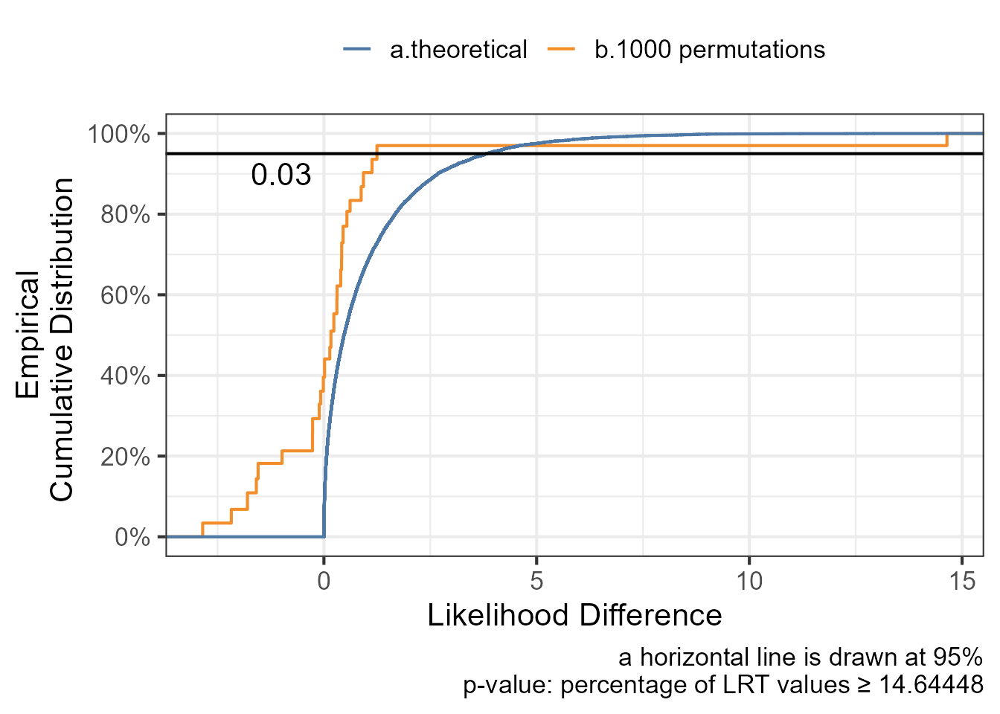
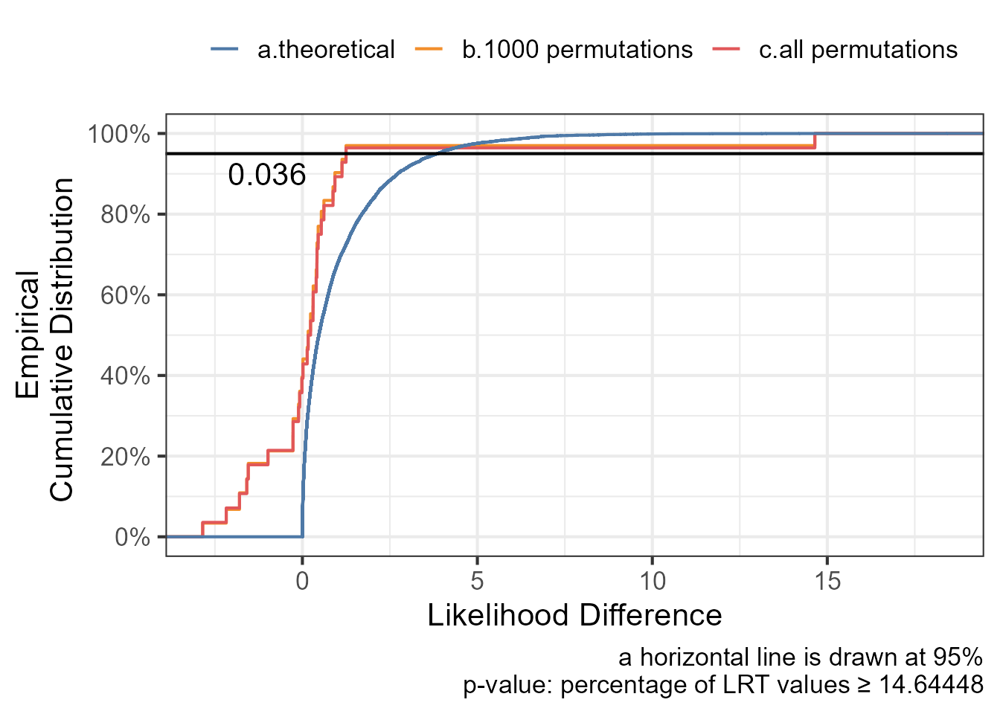

In this post, I will cover a general, randomization-based methodology to compare models without assuming an a priori known distribution for the test statistic. A regular likelihood ratio test (LRT) comparing nested models will assume infinite data (asymptotic) and that the likelihood ratio has a χ² distribution with degrees of freedom equal to the number of parameters difference. Other common situations where the χ² distribution does not apply:
testing variance components for example comparing a model with random effect on a parameter versus a model without the random effect. The literature has shown that since the variance is on a boundary a χ² with a mixture of degrees of freedom of 0 and 1 applies. Simulation can help us figure out the weights and for simple linear mixed effects model solutions exist.
comparing models that are not nested like a model using different models for the effect of a covariate on a parameter for example power versus linear models. Or comparing a model with covariate on slope versus a covariate on intercept as shown below.
First, we will simulate a small dataset of eight individuals with a random slope and intercept model to mimic the situation where the asymptotic assumptions might not hold:
The plot above shows the response versus time split by covariate and we can see that the intercept and slope differ by covariate value and that we have a total of eight subjects with unbalance i.e. two IDs having covariate value of 1 and six IDs having a value of 2. Next, we fit a series linear mixed effects models.
When comparing model2 and model1 we have no p-value as the degrees of freedom are equal. The AIC is lower for model2 by 14.6 points suggesting it is better than model1.
Next, we will use randomization/permutation procedure to build the null distribution for the likelihood difference and compute a p-value.
Code
n_permutations <-1000# Number of permutations lrt_null_distribution <- pbapply::pbreplicate(n_permutations, { permcov <- modeldata %>%distinct(ID,cov)%>%mutate(cov_permuted2=sample(cov,replace =FALSE))# modeldataperm <-left_join(modeldata,permcov) model1_perm <-lmer(contresponse ~ time + cov_permuted2 + (1| ID) + (0+time | ID),data=modeldataperm,REML =FALSE) model2_perm <-lmer(contresponse ~ time + time:cov_permuted2+ (1| ID) + (0+time | ID),data=modeldataperm,REML =FALSE)as.numeric(2* (logLik(model2_perm) -logLik(model1_perm)))})p_value_permutation <-mean(lrt_null_distribution >= lrt_stat)ggplot(data.frame(lrt=lrt_null_distribution,perm=1:length(lrt_null_distribution)),aes(lrt)) +geom_step(stat="ecdf",aes(col="b.1000 permutations"))+geom_step(data=data.frame(lrt=rchisq(n =10000, df =1)),stat="ecdf",aes(col="a.theoretical"))+geom_hline(yintercept =0.95)+annotate(geom="text", x =-1, y =0.90, label=p_value_permutation)+ ggthemes::scale_color_tableau()+theme_bw(base_size=16)+theme(legend.position ="top")+labs(col="",x="Likelihood Difference",y="Empirical\nCumulative Distribution ",caption ="a horizontal line is drawn at 95% p-value: percentage of LRT values ≥ 14.64448")+scale_y_continuous(breaks=seq(0,1,0.2),labels = scales::percent_format())

The randomization test has shown that the model with covariate on slope is better than the model with covariate on intercept with a p-value of 0.03 which confirm the original data 14.65 points difference in -2LL. The procedure above randomly permuted the covariate values across the individuals a 1000 times. But wait a minute, we only have 8 subjects with 6 having covariate = 1 and 2 having covariate = 2 how many possible total permutation we have ? We will can compute that we have a total of 28 unique permutations and that we could have run the 28 models to have the full distribution of the LRT. This is what we are doing next !
ggplot(data.frame(lrt=lrt_null_distribution,perm=1:length(lrt_null_distribution)),aes(lrt)) +geom_step(stat="ecdf",aes(col="b.1000 permutations"))+geom_step(data=data.frame(lrt=lrt_null_distribution_all),stat="ecdf",aes(col="c.all permutations"))+geom_step(data=data.frame(lrt=rchisq(n =10000, df =1)),stat="ecdf",aes(col="a.theoretical"))+geom_hline(yintercept =0.95)+annotate(geom="text", x =-1, y =0.90, label=round(p_value_permutation_all,3))+ ggthemes::scale_color_tableau()+theme_bw(base_size=16)+theme(legend.position ="top")+theme(legend.position ="top")+labs(col="",x="Likelihood Difference",y="Empirical\nCumulative Distribution ",caption ="a horizontal line is drawn at 95% p-value: percentage of LRT values ≥ 14.64448")+scale_y_continuous(breaks=seq(0,1,0.2),labels = scales::percent_format())

The plot shows that there is a good agreement between the random 1000 permutations versus the all permutations (N=28) approach. Ideally, one should not waste CPU and time when the full distribution can be simulated. In practice the number of possible permutation becomes quickly in the millions and billions so we resort to a random subset to approximate it.
Now it is your turn, use the code provided in the post to compute p-values for removing random effect on slope!.